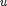
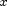
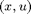

rollout.m
Summary: Generate a state trajectory using an ODE solver (and any additional dynamics) from a particular initial state by applying either a particular policy or random actions.
function [x y L latent] = rollout(start, policy, H, plant, cost)
Input arguments:
start vector containing initial states (without controls) [nX x 1] policy policy structure .fcn policy function .p parameter structure (if empty: use random actions) .maxU vector of control input saturation values [nU x 1] H rollout horizon in steps plant the dynamical system structure .subplant (opt) additional discrete-time dynamics .augment (opt) augment state using a known mapping .constraint (opt) stop rollout if violated .poli indices for states passed to the policy .dyno indices for states passed to cost .odei indices for states passed to the ode solver .subi (opt) indices for states passed to subplant function .augi (opt) indices for states passed to augment function cost cost structure
Output arguments:
x matrix of observed states [H x nX+nU] y matrix of corresponding observed successor states [H x nX ] L cost incurred at each time step [ 1 x H ] latent matrix of latent states [H+1 x nX ]
Copyright (C) 2008-2013 by Marc Deisenroth, Andrew McHutchon, Joe Hall, and Carl Edward Rasmussen.
Last modification: 2013-05-21
Contents
High-Level Steps
- Compute control signal  from state : either apply policy or random actions
- Simulate the true dynamics for one time step using the current pair 
- Check whether any constraints are violated (stop if true)
- Apply random noise to the successor state
- Compute cost (optional)
- Repeat until end of horizon
function [x y L latent] = rollout(start, policy, H, plant, cost)
Code
if isfield(plant,'augment'), augi = plant.augi; % sort out indices! else plant.augment = inline('[]'); augi = []; end if isfield(plant,'subplant'), subi = plant.subi; else plant.subplant = inline('[]',1); subi = []; end odei = plant.odei; poli = plant.poli; dyno = plant.dyno; angi = plant.angi; simi = sort([odei subi]); nX = length(simi)+length(augi); nU = length(policy.maxU); nA = length(angi); state(simi) = start; state(augi) = plant.augment(state); % initializations x = zeros(H+1, nX+2*nA); x(1,simi) = start' + randn(size(simi))*chol(plant.noise); x(1,augi) = plant.augment(x(1,:)); u = zeros(H, nU); latent = zeros(H+1, size(state,2)+nU); y = zeros(H, nX); L = zeros(1, H); next = zeros(1,length(simi)); for i = 1:H % --------------------------------------------- generate trajectory s = x(i,dyno)'; sa = gTrig(s, zeros(length(s)), angi); s = [s; sa]; x(i,end-2*nA+1:end) = s(end-2*nA+1:end); % 1. Apply policy ... or random actions -------------------------------------- if isfield(policy, 'fcn') u(i,:) = policy.fcn(policy,s(poli),zeros(length(poli))); else u(i,:) = policy.maxU.*(2*rand(1,nU)-1); end latent(i,:) = [state u(i,:)]; % latent state % 2. Simulate dynamics ------------------------------------------------------- next(odei) = simulate(state(odei), u(i,:), plant); next(subi) = plant.subplant(state, u(i,:)); % 3. Stop rollout if constraints violated ------------------------------------ if isfield(plant,'constraint') && plant.constraint(next(odei)) H = i-1; fprintf('state constraints violated...\n'); break; end % 4. Augment state and randomize --------------------------------------------- state(simi) = next(simi); state(augi) = plant.augment(state); x(i+1,simi) = state(simi) + randn(size(simi))*chol(plant.noise); x(i+1,augi) = plant.augment(x(i+1,:)); % 5. Compute Cost ------------------------------------------------------------ if nargout > 2 L(i) = cost.fcn(cost,state(dyno)',zeros(length(dyno))); end end y = x(2:H+1,1:nX); x = [x(1:H,:) u(1:H,:)]; latent(H+1, 1:nX) = state; latent = latent(1:H+1,:); L = L(1,1:H);